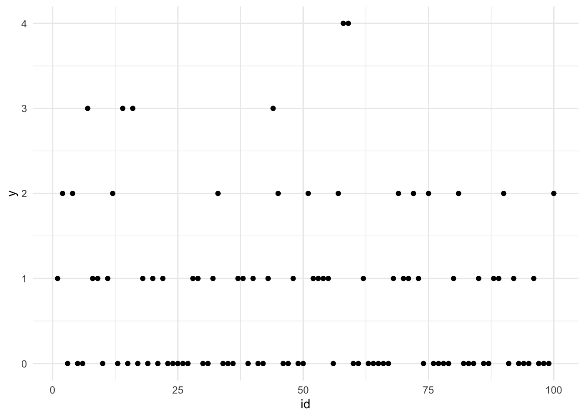
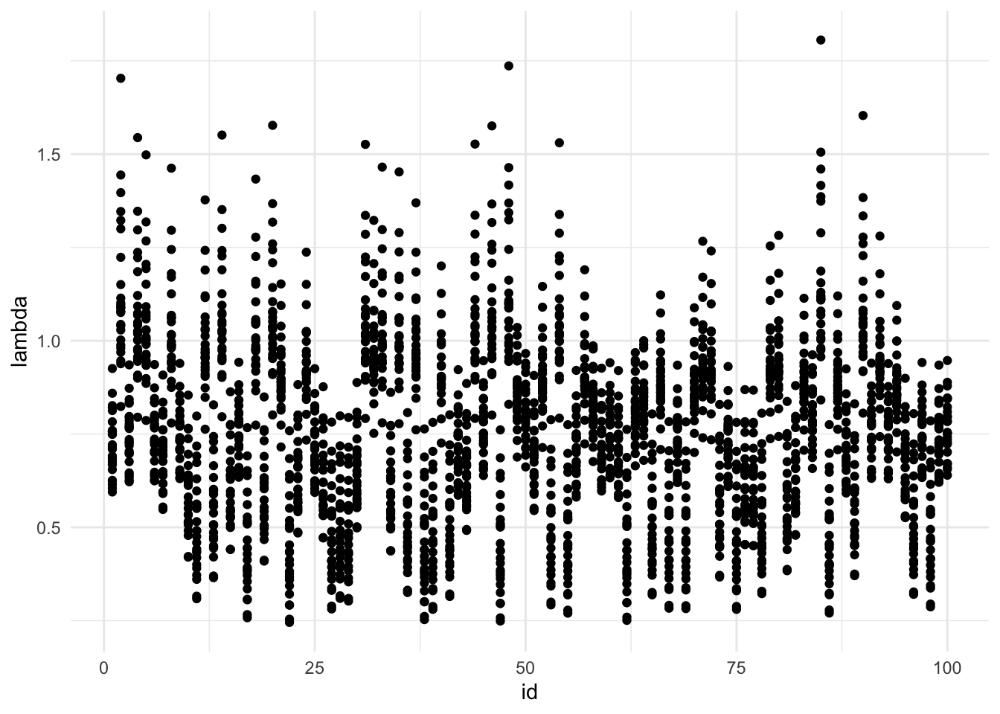

library(INLA)
library(ggplot2)
n <- 100
x <- runif(n)
eta <- -1 + x
lambda <- exp(eta)
y <- rpois(n, lambda)
df <- data.frame(id = 1:n, x = x, y = y)
ggplot(df, aes(x = id, y = y)) +
geom_point() +
theme_minimal()
fit <- INLA::inla(
y ~ 1 + x,
family = "poisson",
data = data.frame(x, y),
control.predictor = list(link = 1),
control.compute=list(config = TRUE)
)
summary(fit)
Call:
c("inla.core(formula = formula, family = family, contrasts = contrasts,
", " data = data, quantiles = quantiles, E = E, offset = offset, ", "
scale = scale, weights = weights, Ntrials = Ntrials, strata = strata,
", " lp.scale = lp.scale, link.covariates = link.covariates, verbose =
verbose, ", " lincomb = lincomb, selection = selection, control.compute
= control.compute, ", " control.predictor = control.predictor,
control.family = control.family, ", " control.inla = control.inla,
control.fixed = control.fixed, ", " control.mode = control.mode,
control.expert = control.expert, ", " control.hazard = control.hazard,
control.lincomb = control.lincomb, ", " control.update =
control.update, control.lp.scale = control.lp.scale, ", "
control.pardiso = control.pardiso, only.hyperparam = only.hyperparam,
", " inla.call = inla.call, inla.arg = inla.arg, num.threads =
num.threads, ", " keep = keep, working.directory = working.directory,
silent = silent, ", " inla.mode = inla.mode, safe = FALSE, debug =
debug, .parent.frame = .parent.frame)" )
Time used:
Pre = 0.758, Running = 0.261, Post = 0.0116, Total = 1.03
Fixed effects:
mean sd 0.025quant 0.5quant 0.975quant mode kld
(Intercept) -0.824 0.271 -1.356 -0.824 -0.293 -0.824 0
x 0.957 0.411 0.152 0.957 1.762 0.957 0
Marginal log-Likelihood: -122.22
is computed
Posterior summaries for the linear predictor and the fitted values are computed
(Posterior marginals needs also 'control.compute=list(return.marginals.predictor=TRUE)')samples <- INLA::inla.posterior.sample(25, fit)
samples[[1]]$hyperparNULLhead(samples[[1]]$latent) [,1]
Predictor:1 -0.32677319
Predictor:2 -0.01961484
Predictor:3 -0.30763275
Predictor:4 -0.05678597
Predictor:5 -0.06831978
Predictor:6 -0.30598914samples[[1]]$logdens$hyperpar
NULL
$latent
[1] 0.9907144
$joint
[1] 0.9907144target <- paste0("Predictor:", 1:n)
predictor_samples <- sapply(samples, function(x) x$latent[target, 1])
lambda_samples <- exp(predictor_samples)
samples_df <- data.frame(lambda_samples) |>
tibble::rowid_to_column("id") |>
tidyr::pivot_longer(cols = starts_with("X"), names_to = "sample", values_to = "value") |>
dplyr::mutate(sample = as.numeric(sub("^X", "", sample)))
head(samples_df)# A tibble: 6 × 3
id sample value
<int> <dbl> <dbl>
1 1 1 0.721
2 1 2 0.750
3 1 3 0.626
4 1 4 0.684
5 1 5 0.676
6 1 6 0.813dim(samples_df)[1] 2500 3ggplot(samples_df, aes(x = id, y = value)) +
geom_point() +
labs(x = "id", y = "lambda") +
theme_minimal()